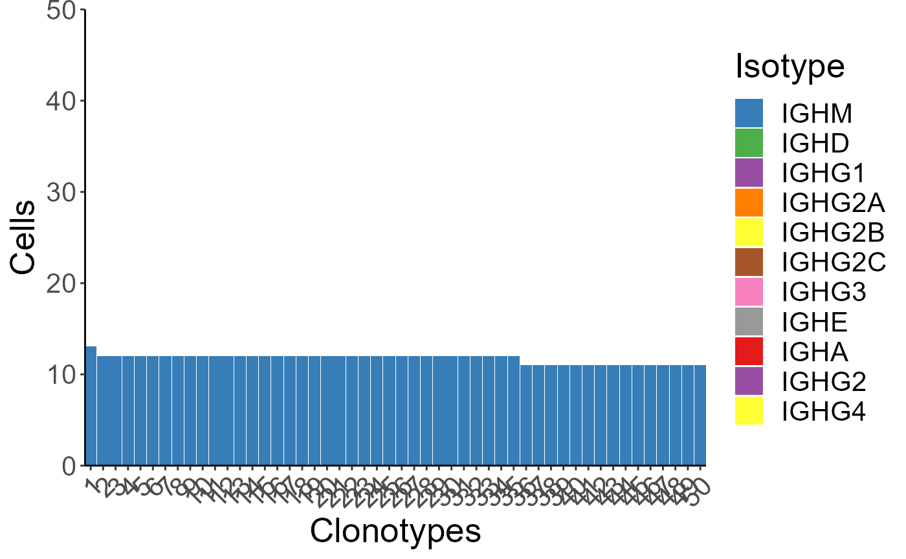
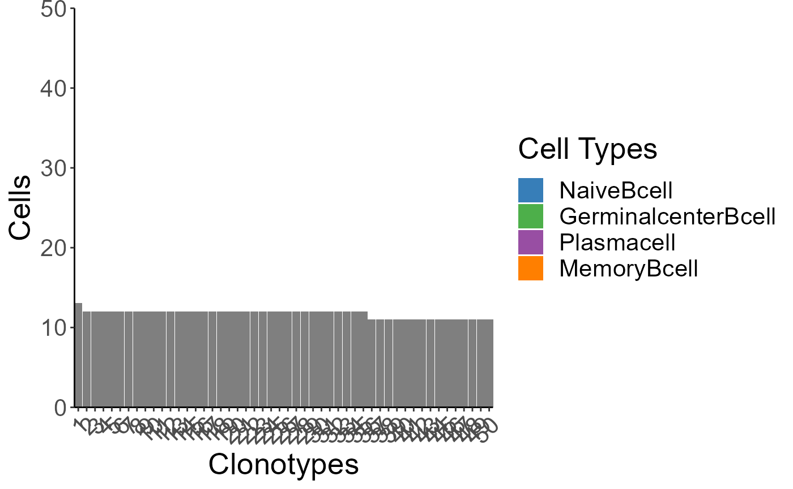
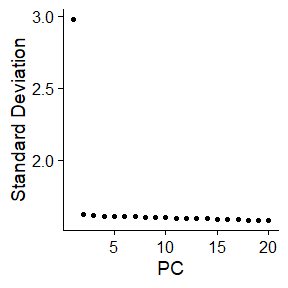
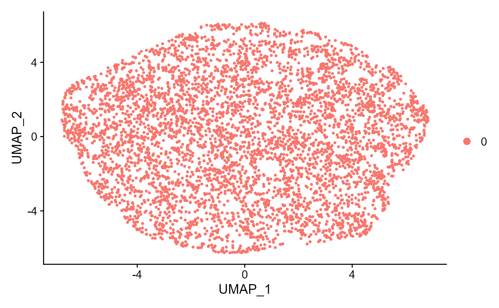
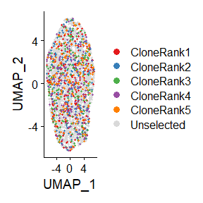
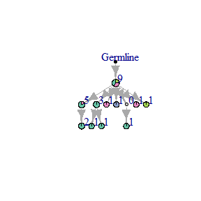
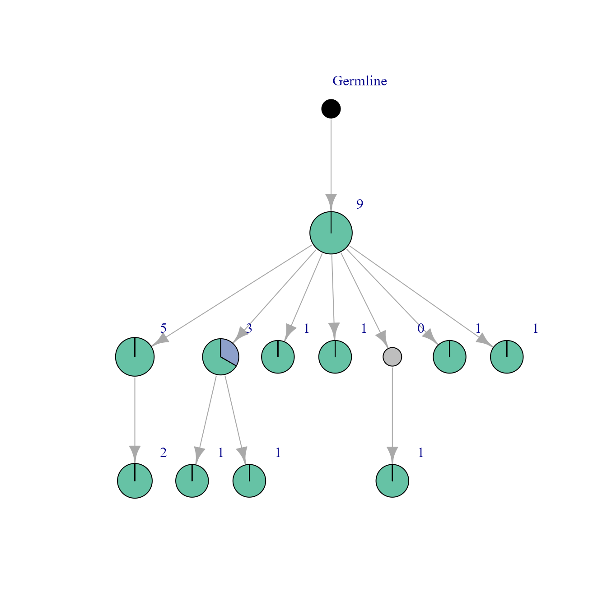

All example simulations are mouse cell simulations. Load the package and get started!
library(Platypus) #All Echidna functions are contained within Platypus v3.1Simulate naive and expanded repertoires
In Echidna, there are pre-installed R objects used as parameters and users are allowed to change it. For example, class_switch_prob_mus controls the probability for mouse class switching. It is a 9*9 matrix.The row and column names are initially “IGHM”,“IGHD”,“IGHG1”,“IGHG2A”,“IGHG2B”,“IGHG2C”,“IGHG3”,“IGHE”,“IGHA”. The probability for a cell to switch from “IGHM” to “IGHD” is the value at class_switch_prob_mus[1,2].
Naive B cell repertoires contain clones with minor clonal expansion and are mostly IgM+ cells. To simulate naive repertoires, first set the isotype and phenotype switching probability matrix to 0:
class_switch_prob_mus[class_switch_prob_mus>0]<-0
trans_switch_prob_b[trans_switch_prob_b>0]<-0Then use simulator function: Here we turn off clonal.selection, to suppress the growth of big clones and give an even clonal frequency distribution:
naive<-simulate_repertoire(initial.size.of.repertoire = 500,
duration.of.evolution = 30,
vdj.branch.prob = 0.5,
cell.division.prob = c(0.01,0.3),
max.cell.number = 5000,
max.clonotype.number = 5000,
complete.duration=T,
clonal.selection =F,
death.rate = 0,
transcriptome.on = T,
SHM.nuc.prob = 0.00001
)Use clonofreq.isotype.plot to see the barplot of clonal frequency, colored with isotypes.
clonofreq.isotype.plot(naive[[1]], 50, y.limit = 50)
Use clonofreq.trans.plot to see the barplot of clonal frequency, colored with phenotypes.
clonofreq.trans.plot(all.contig.annotations = naive[[1]], top.n = 50, y.limit = 50, trans.names = colnames(trans_switch_prob_b),history =naive[[12]] )
Expanded repertoires have more expanded clones, more variations in cell differentiation, and class-switching. To simulate expanded repertoire, First set the class switching probability matrix to a desired value - e.g., we can skew the final repertoire to have mostly IgG+ cells and some fraction of other isotypes; Then set the phenotype switching matrix to make the final phenotype distribution has majority of plasma cells and some germinal center and memory B cells.
class_switch_prob_mus[class_switch_prob_mus>0]<-0
class_switch_prob_mus[1,3]<-0.01
class_switch_prob_mus[1,4]<-0.01
class_switch_prob_mus[1,5]<-0.01
class_switch_prob_mus[1,2]<-0.001
class_switch_prob_mus[1,6]<-0.001
class_switch_prob_mus[1,7]<-0.001
class_switch_prob_mus[7,1]<-0.1
trans_switch_prob_b[trans_switch_prob_b>0]<-0
trans_switch_prob_b[1,3]<-0.01
trans_switch_prob_b[1,2]<-0.01
trans_switch_prob_b[2,3]<-0.8
trans_switch_prob_b[3,4]<-0.001
trans_switch_prob_b[4,3]<-0.01In expanded B cell repertoires, the selected clones tend to expand more and have more IgG+ cells and plasma cells, while the non expanded clones are likely to be naive B cells of the IgM isotype.
In the function, the parameter clonal.selection is for controlling the division rate according to their clonal frequency, and eventually control the final clonal size distribution. If set to be TURE, cells in clones with higher frequency have their division probability proportional to the clonal frequency. If FALSE, clones with higher frequency will have lower probability to expand. To use adjust the different cell division rates, here comes in another parameter cell.division.prob.
The parameter cell.division.prob is the probability of cells to be duplicated in each time step. Default is 0.1. If uneven probability for different clones is needed, the input should be a vector of 2 numeric items, with the first item being the lower bound, the second item being the upper bound of the division rate. The most abundant clone will get the highest division rate, and division rate of other clones will follow arithmetic progression and keep decreasing until the last abundant clone with the lower limit of division rate. If a third value is given, the third value will be the division rate for cells with selected sequences. the selected sequences can have their special division probability. If a fourth number is given, the division probability of selected sequence will be sampled between the third number and the fourth number.
Here we set cell.division.prob as 0.2,0.2,0.5, meaning selected clones will have higher probability (0.5) to undergo cell division than not selected clones, while other cells all have the same cell division rate (0.2). transcriptome.switch.selection.dependent is set to be TRUE to make sure selected cells switch to the next cell state than naive cell.
class.switch.selection.dependent is set to be TRUE to make sure selected cells switch away from IgM to other isotype expressing cells.
expanded<-simulate_repertoire(initial.size.of.repertoire = 50,
duration.of.evolution = 30,
vdj.branch.prob = 0.1,
cell.division.prob = c(0.2,0.2,0.5),
max.cell.number = 5000,
max.clonotype.number = 5000,
complete.duration=T,
clonal.selection =T,
transcriptome.on = T,
death.rate = 0,
SHM.nuc.prob = 0.00001,
sequence.selection.prob = 0.3,
transcriptome.switch.selection.dependent = T,
class.switch.selection.dependent = T
)
clonofreq.isotype.plot(expanded[[1]],50,y.limit = 750)
#> Warning: Removed 1 rows containing missing values (geom_bar).
##Simulate repertoires with different V gene usage distribution
Originally, V/D/J genes are randomly selected from the gene pools stored in data lists. However, the lists can be modified according to need. To make genes easy to recognize, here we take the first 50 heavy chain V gene and 30 light chain V genes:
mus_b_h[[1]]<-mus_b_h[[1]][1:50,]
mus_b_l[[1]]<-mus_b_l[[1]][1:30,]In the first case, we simulate a repertoire with all V gene randomly chosen, meaning the probability of V genes being selected are evenly distributed:
even<-simulate_repertoire(initial.size.of.repertoire = 5000,
duration.of.evolution = 0,
vdj.branch.prob = 0,
cell.division.prob = c(0,0),
max.cell.number = 5000,
max.clonotype.number = 5000,
complete.duration=F,
clonal.selection = F,
death.rate = 0,
transcriptome.on = F,
igraph.on = F
)In the second case, we simulate a repertoire with the first 2 heavy chain V genes and the first light chain V gene more likely to be selected. mus_b_h is a list containing 3 dataframes storing the germline V, D, J gene sequences for mouse B cell heavy chains. The first item is for V genes, the second item is for D genes, the third item is for J genes. The corresponding list mus_b_l has 2 items, storing mouse B cell light chain germline V and J genes. We replicate the first 2 rows in the first item in mus_b_h, and the first row in mus_b_l, 30 times and 20 times respectively:
reph<-mus_b_h[[1]][c(1,2),]
repl<-mus_b_l[[1]][c(1),]
mus_b_h[[1]]<-rbind(mus_b_h[[1]],reph[rep(seq_len(nrow(reph)), each = 30), ])
mus_b_l[[1]]<-rbind(mus_b_l[[1]],repl[rep(seq_len(nrow(repl)), each = 20), ])And simulate based on the new gene pool after modification:
uneven<-simulate_repertoire(initial.size.of.repertoire = 5000,
duration.of.evolution = 0,
vdj.branch.prob = 0,
cell.division.prob = c(0,0),
max.cell.number = 5000,
max.clonotype.number = 5000,
complete.duration=F,
clonal.selection = F,
death.rate = 0,
transcriptome.on = F,
igraph.on = F
)Use get.vgu.matrix to get the heavy and light chain V gene usage data normalized on cell level or clone level.
even_vgu_cell<-get.vgu.matrix(even[[1]],"cell")
even_vgu_clone<-get.vgu.matrix(even[[1]],"clone")
head(even_vgu_cell)
#> IGKV1-131 IGKV1-132 IGKV1-88 IGKV12-38 IGKV12-40 IGKV12-41 IGKV12-46
#> IGHV1-11 4 1 3 8 2 4 1
#> IGHV1-12 4 3 2 5 5 7 4
#> IGHV1-13 3 5 4 4 2 6 4
#> IGHV1-14 1 1 4 5 6 4 2
#> IGHV1-15 6 3 4 5 1 3 6
#> IGHV1-16 3 7 4 3 5 5 6
#> IGKV12-47 IGKV12-89 IGKV13-76 IGKV13-82 IGKV13-84 IGKV13-85 IGKV14-126
#> IGHV1-11 4 2 3 5 1 4 6
#> IGHV1-12 5 1 5 3 3 1 4
#> IGHV1-13 4 5 2 6 3 4 3
#> IGHV1-14 1 5 2 4 5 3 4
#> IGHV1-15 4 5 8 7 3 2 2
#> IGHV1-16 1 1 3 4 3 5 3
#> IGKV14-130 IGKV17-121 IGKV17-127 IGKV17/OR16-3 IGKV17/OR19-2 IGKV19-93
#> IGHV1-11 4 4 2 4 4 4
#> IGHV1-12 3 6 1 4 4 5
#> IGHV1-13 6 2 2 7 5 6
#> IGHV1-14 0 2 7 3 1 3
#> IGHV1-15 3 3 4 1 3 3
#> IGHV1-16 5 3 4 3 2 3
#> IGKV20-101-2 IGKV3-4 IGKV3-8 IGKV3-9 IGKV4-50 IGKV4-52 IGKV4-53
#> IGHV1-11 1 4 4 2 4 2 3
#> IGHV1-12 2 4 2 1 3 2 5
#> IGHV1-13 6 3 4 4 5 2 2
#> IGHV1-14 2 1 4 0 4 3 2
#> IGHV1-15 4 2 3 4 2 1 3
#> IGHV1-16 4 1 4 3 2 5 2
#> IGKV4-54 IGKV4-55 IGKV4-56
#> IGHV1-11 4 8 2
#> IGHV1-12 3 3 1
#> IGHV1-13 4 1 6
#> IGHV1-14 2 4 3
#> IGHV1-15 3 2 5
#> IGHV1-16 2 4 6
head(even_vgu_clone)
#> IGKV1-131 IGKV1-132 IGKV1-88 IGKV12-38 IGKV12-40 IGKV12-41 IGKV12-46
#> IGHV1-11 4 1 3 8 2 4 1
#> IGHV1-12 4 3 2 5 5 7 4
#> IGHV1-13 3 5 4 4 2 6 4
#> IGHV1-14 1 1 4 5 6 4 2
#> IGHV1-15 6 3 4 5 1 3 6
#> IGHV1-16 3 7 4 3 5 5 6
#> IGKV12-47 IGKV12-89 IGKV13-76 IGKV13-82 IGKV13-84 IGKV13-85 IGKV14-126
#> IGHV1-11 4 2 3 5 1 4 6
#> IGHV1-12 5 1 5 3 3 1 4
#> IGHV1-13 4 5 2 6 3 4 3
#> IGHV1-14 1 5 2 4 5 3 4
#> IGHV1-15 4 5 8 7 3 2 2
#> IGHV1-16 1 1 3 4 3 5 3
#> IGKV14-130 IGKV17-121 IGKV17-127 IGKV17/OR16-3 IGKV17/OR19-2 IGKV19-93
#> IGHV1-11 4 4 2 4 4 4
#> IGHV1-12 3 6 1 4 4 5
#> IGHV1-13 6 2 2 7 5 6
#> IGHV1-14 0 2 7 3 1 3
#> IGHV1-15 3 3 4 1 3 3
#> IGHV1-16 5 3 4 3 2 3
#> IGKV20-101-2 IGKV3-4 IGKV3-8 IGKV3-9 IGKV4-50 IGKV4-52 IGKV4-53
#> IGHV1-11 1 4 4 2 4 2 3
#> IGHV1-12 2 4 2 1 3 2 5
#> IGHV1-13 6 3 4 4 5 2 2
#> IGHV1-14 2 1 4 0 4 3 2
#> IGHV1-15 4 2 3 4 2 1 3
#> IGHV1-16 4 1 4 3 2 5 2
#> IGKV4-54 IGKV4-55 IGKV4-56
#> IGHV1-11 4 8 2
#> IGHV1-12 3 3 1
#> IGHV1-13 4 1 6
#> IGHV1-14 2 4 3
#> IGHV1-15 3 2 5
#> IGHV1-16 2 4 6Make clones with specific V gene have different probability to be chosen in clonal selection
The dataframe special_v is prepared for this propose. Set special.v.gene as TRUE, the simulator will execute the indicated probability to be chosen in clonal selection for clones with the specific V genes listed in the dataframe special_v. The parameter sequence.selection.prob is the probability for every sequence to be selected as expanding variant. Here we set it to be 0, to make only variants with special v gene get chance to be selected.
specialv<-simulate_repertoire(initial.size.of.repertoire = 100,
duration.of.evolution = 30,
vdj.branch.prob = 0.1,
cell.division.prob = c(0.2,0.2,0.5),
max.cell.number = 5000,
max.clonotype.number = 5000,
complete.duration=T,
clonal.selection =T,
death.rate = 0,
transcriptome.on = T,
SHM.nuc.prob = 0.00001,
sequence.selection.prob = 0,
transcriptome.switch.selection.dependent = T,
class.switch.selection.dependent = T,
special.v.gene = T
)Use get.vgu.matrix to get the heavy and light chain V gene usage data normalized on cell level or clone level.
specialv_vgu_cell<-get.vgu.matrix(specialv[[1]],"cell")
head(specialv_vgu_cell)
#> IGKV1-131 IGKV1-132 IGKV12-38 IGKV12-40 IGKV12-41 IGKV12-46 IGKV12-47
#> IGHV1-11 2701 0 0 0 24 0 11
#> IGHV1-12 214 0 20 40 0 6 4
#> IGHV1-13 0 0 0 0 0 0 0
#> IGHV1-14 13 0 0 0 0 0 0
#> IGHV1-16 0 0 0 0 0 0 0
#> IGHV1-19 0 0 0 0 0 0 0
#> IGKV12-89 IGKV13-76 IGKV13-84 IGKV13-85 IGKV14-126 IGKV14-130
#> IGHV1-11 0 0 32 10 0 26
#> IGHV1-12 34 92 51 2 33 0
#> IGHV1-13 27 0 0 0 0 0
#> IGHV1-14 0 0 0 0 0 0
#> IGHV1-16 0 0 0 0 0 21
#> IGHV1-19 0 0 0 0 0 0
#> IGKV17-127 IGKV17/OR19-2 IGKV19-93 IGKV20-101-2 IGKV3-4 IGKV3-9
#> IGHV1-11 63 0 0 0 25 20
#> IGHV1-12 30 50 43 0 0 10
#> IGHV1-13 0 0 0 0 0 0
#> IGHV1-14 0 0 0 0 0 0
#> IGHV1-16 0 0 0 0 0 0
#> IGHV1-19 0 0 35 0 0 0
#> IGKV4-50 IGKV4-52 IGKV4-54 IGKV4-55 IGKV4-56
#> IGHV1-11 31 0 48 0 0
#> IGHV1-12 0 0 0 62 0
#> IGHV1-13 0 0 0 0 0
#> IGHV1-14 0 0 0 0 0
#> IGHV1-16 0 0 0 0 0
#> IGHV1-19 0 0 0 0 0
specialv_vgu_clone<-get.vgu.matrix(specialv[[1]],"clone")
head(specialv_vgu_clone)
#> IGKV1-131 IGKV1-132 IGKV12-38 IGKV12-40 IGKV12-41 IGKV12-46 IGKV12-47
#> IGHV1-11 13 0 0 0 2 0 1
#> IGHV1-12 11 0 1 1 0 1 1
#> IGHV1-13 0 0 0 0 0 0 0
#> IGHV1-14 1 0 0 0 0 0 0
#> IGHV1-16 0 0 0 0 0 0 0
#> IGHV1-19 0 0 0 0 0 0 0
#> IGKV12-89 IGKV13-76 IGKV13-84 IGKV13-85 IGKV14-126 IGKV14-130
#> IGHV1-11 0 0 1 1 0 1
#> IGHV1-12 1 3 1 1 2 0
#> IGHV1-13 1 0 0 0 0 0
#> IGHV1-14 0 0 0 0 0 0
#> IGHV1-16 0 0 0 0 0 1
#> IGHV1-19 0 0 0 0 0 0
#> IGKV17-127 IGKV17/OR19-2 IGKV19-93 IGKV20-101-2 IGKV3-4 IGKV3-9
#> IGHV1-11 1 0 0 0 1 1
#> IGHV1-12 1 2 1 0 0 1
#> IGHV1-13 0 0 0 0 0 0
#> IGHV1-14 0 0 0 0 0 0
#> IGHV1-16 0 0 0 0 0 0
#> IGHV1-19 0 0 1 0 0 0
#> IGKV4-50 IGKV4-52 IGKV4-54 IGKV4-55 IGKV4-56
#> IGHV1-11 1 0 1 0 0
#> IGHV1-12 0 0 0 2 0
#> IGHV1-13 0 0 0 0 0
#> IGHV1-14 0 0 0 0 0
#> IGHV1-16 0 0 0 0 0
#> IGHV1-19 0 0 0 0 0Simulate repertoires with different gene expression pattern
Seurat (Stuart and Butler et al.) is a gene expression data processing tool kit. With the provided tools such as tSNE, Umap, we can see how cell populations are distributed. We can simulate immune cell gene expression data along with their immune repertoire sequences. The repertoire can contain different cell populations, and the gene expression data of these populations might be distinct or somewhat close to each other. trans_switch_prob_t is a matrix indicating the probability of switching between phenotypes. In the first case, we simulate a CD8+ T cell repertoire with distinct cell population distribution based on experimental gene expression data mean values:
trans_switch_prob_t[trans_switch_prob_t>0]<-0
trans_switch_prob_t[4,5]<-0.3
trans_switch_prob_t[5,6]<-0.3
trans_switch_prob_t[6,7]<-0.3
trans_switch_prob_t[7,4]<-0.3
CD8_experimental<-simulate_repertoire(cell.type = "T",
cd4.proportion = 0,
initial.size.of.repertoire = 50,
duration.of.evolution = 20,
vdj.branch.prob = 0.1,
cell.division.prob = c(0.5,0.5),
class.switch.prob = class_switch_prob_mus,
max.cell.number = 5000,
max.clonotype.number = 5000,
complete.duration=T,
clonal.selection =T,
death.rate = 0,
transcriptome.on = T,
igraph.on = F,
SHM.nuc.prob = 0.00001)In the second case, we simulate a repertoire with cell populations overlapping. The columns in mus_t_trans dataframe are vectors controlling gene expression level. The rownames are gene names, colnames are cell type names. In the default setting, column 4 to 7 are gene expression vectors for CD8+ T cells. First we make some gene expression vectors with close or remote distance from each other by editing mus_t_trans:
While most reference data is contained within the package, due to size restrictions, additional neccessary tables are available as follows
load(url("https://polybox.ethz.ch/index.php/s/zETU3ruyfTjj8T8/download"))
base1<-rnorm(nrow(mus_t_trans), mean = 1, sd = 0.3)
base2<-rnorm(nrow(mus_t_trans), mean = 1, sd = 0.3)
base3<-rnorm(nrow(mus_t_trans), mean = 1, sd = 0.3)
base4<-rnorm(nrow(mus_t_trans), mean = 1, sd = 0.5)
mus_t_trans[,4]<-base1
mus_t_trans[,5]<-base1
mus_t_trans[1:400,5]<-base2[1:400]
mus_t_trans[,6]<-mus_t_trans[,5]
mus_t_trans[20000:20200,6]<-base3[20000:20200]
mus_t_trans[,7]<-base4And edit phenotype switching probability matrix trans_switch_prob_t, to ensure every phenotype have a mediate number of population.
trans_switch_prob_t[4,5]<-0.3
trans_switch_prob_t[5,6]<-0.3
trans_switch_prob_t[6,7]<-0.3
trans_switch_prob_t[7,4]<-0.3Finally simulate based on the new parameters we just made.
CD8_overlap<-simulate_repertoire(cell.type = "T",
initial.size.of.repertoire = 50,
cd4.proportion = 0,
duration.of.evolution = 20,
vdj.branch.prob = 0.1,
cell.division.prob = c(0.5,0.5),
max.cell.number = 5000,
max.clonotype.number = 5000,
complete.duration=T,
clonal.selection =T,
death.rate = 0,
transcriptome.on = T,
SHM.nuc.prob = 0.00001)Echidna provide functions that wrapped Seurat functions to visualize simulated gene expression data in few lines. Alternatively, the user can choose to run Seurat follow the instructions (https://satijalab.org/seurat/) starting from “gex <- Seurat::CreateSeuratObject(counts = CD8_overlap[[7]])” First plot elbow to select a proper dimension value for the next step of dimension reduction.
gex<-get.elbow(CD8_overlap[[7]])
#> Warning: The following arguments are not used: row.names
#> Centering and scaling data matrix
#> PC_ 1
#> Positive: Reep4, Aldh1b1, Pla2g7, Naaa, Gm26602, Gm9725, Tubgcp6, Pitpnm2, Abcf3, March5
#> Sema4b, A530064D06Rik, Cage1, Phf19, Abcb6, Ten1, Galnt14, Grin3b, Arrdc3, Memo1
#> Trub1, Gchfr, Igkv3-10, Tmem184c, Traf3ip2, Nt5e, Arhgef39, Tbk1, Pole3, Ctps
#> Negative: Uba52, Rps3a1, Rps5, mt-Co1, Rpl18a, Rps3, Rps11, mt-Atp8, Rpl6, Rpl12
#> Rpl37, Rpl26, Rpl10a, Rpl15, Rpl7, Rplp2, Gapdh, Rpl13a, Zgpat, Ivns1abp
#> Srsf5, Atp6v1g1, Txnip, Ap1m1, Tmem258, Polr2a, Yars2, Dclre1a, Gm20707, Serinc3
#> PC_ 2
#> Positive: Tmem154, Ppa2, Bag1, Uba52, Cog7, Zfp958, Fam173a, Gm43388, Tbk1, Igkv1-88
#> Trac, Map4k1, Ccdc97, Thoc7, Vps37c, Tpd52, Mcu, Trnt1, Rgs7bp, 1190007I07Rik
#> Rab24, Gorab, Zfp790, Uqcrc2, Gm42555, Crkl, Als2cl, Usp16, Ppp1cc, Tma7
#> Negative: Tbc1d9b, 0610030E20Rik, Slc14a1, Nsun7, Capn15, Mmgt1, Dnmbp, Alkbh1, Gm10053, Sin3b
#> Akt2, Jade3, Gimap4, Aldh1a2, C1d, Rrp36, Cklf, Txndc17, Ipcef1, Kpna6
#> Stard8, Gsk3b, Ctdspl, Itgb1, Ctbs, Xlr4a, Pank3, Rnase4, Naa35, Elmod3
#> PC_ 3
#> Positive: Runx1, Mapkapk2, Mcm9, Pot1a, Nupl2, 6820408C15Rik, Mblac1, Mns1, Golph3, Pdk3
#> Ube2s, Zbtb32, Rplp2, B3galt4, Rprd1a, Rab22a, Zfp131, Pfkl, Krt10, Mvb12a
#> Ptov1, Nup205, Hnrnpm, Id1, Cdh11, Slc25a25, Zfp316, Agl, Plch2, Mib1
#> Negative: Mtg2, Nup214, Nek11, Tmem209, Tnfsf8, Ets2, Cspg5, Phf21b, 1700055D18Rik, Wdr61
#> Chpt1, Pfdn1, Tspyl3, Klre1, Psmb10, Gm15859, Trim65, Tor1b, Gm27162, Dgkz
#> Ell2, Irf8, Has3, Tmem71, Antxr2, Pin1, Tbcb, She, Rpp25l, Btbd11
#> PC_ 4
#> Positive: Sf3b5, Zfp120, Il17ra, Ankle2, Leng8, Gga1, Psma4, Snhg9, Hopxos, Ttll3
#> Nkg7, Amd2, Spice1, Col10a1, Chpt1, Irf7, Kif2c, Fbl, Grin3b, Akap13
#> Hsbp1, Znfx1, Hars, Akt1, Zdhhc9, Zranb2, Dnajc27, Nrd1, Dnajc17, Gm44148
#> Negative: Noxo1, Trak1, Herc3, Taf4b, Tmem14c, Pgpep1, Sin3b, Zfp523, Klhl24, Snrnp200
#> Smarca5, Men1, Cep97, Kpnb1, Zfyve16, Lmbr1l, Myl10, Kdm2b, Fam98a, Maneal
#> Spsb2, Gm42555, Slc29a3, Hist1h2bh, Amn1, Zfp7, Abca9, Prmt1, Rab1a, Ntng2
#> PC_ 5
#> Positive: Cd53, Ctdspl, Zfp120, Arhgef11, Cog7, Coil, Tmem205, Tet1, Smarcc2, Plk2
#> Pde4d, Mcee, Arc, Gm14302, Morc2a, A530017D24Rik, Phtf1, Tfg, Mgarp, Col5a3
#> Dhcr24, Chmp2a, Rer1, Taf7, Ubr7, Yme1l1, Gm20633, Noxo1, Rpap1, D930016D06Rik
#> Negative: Rpusd3, Gm14295, Capn1, Syne4, Oxct1, Ulk4, Gm27162, Chad, Sf3b5, Slco3a1
#> Trim8, Cops6, Rpp14, Fndc4, Chm, Glrx3, Polr1c, Tmem67, Myo1d, Ccdc125
#> Uqcc2, Desi2, Pgpep1, Ifitm10, Psmd2, Rapgef5, Cmklr1, Clec10a, Gnl2, Per2
Seurat::ElbowPlot(gex)
Then further process the data and get Umap.
gex<-get.umap(gex = gex,d = 4,reso = 0.1)
#> Computing nearest neighbor graph
#> Computing SNN
#> Modularity Optimizer version 1.3.0 by Ludo Waltman and Nees Jan van Eck
#>
#> Number of nodes: 5000
#> Number of edges: 137479
#>
#> Running Louvain algorithm...
#> Maximum modularity in 10 random starts: 0.9000
#> Number of communities: 1
#> Elapsed time: 0 seconds
#> Warning: The default method for RunUMAP has changed from calling Python UMAP via reticulate to the R-native UWOT using the cosine metric
#> To use Python UMAP via reticulate, set umap.method to 'umap-learn' and metric to 'correlation'
#> This message will be shown once per session
#> 20:41:48 UMAP embedding parameters a = 0.9922 b = 1.112
#> 20:41:48 Read 5000 rows and found 4 numeric columns
#> 20:41:48 Using Annoy for neighbor search, n_neighbors = 30
#> 20:41:48 Building Annoy index with metric = cosine, n_trees = 50
#> 0% 10 20 30 40 50 60 70 80 90 100%
#> [----|----|----|----|----|----|----|----|----|----|
#> **************************************************|
#> 20:41:49 Writing NN index file to temp file C:\Users\vickr\AppData\Local\Temp\RtmpScZ5RU\file595c22d06ba2
#> 20:41:49 Searching Annoy index using 1 thread, search_k = 3000
#> 20:41:51 Annoy recall = 100%
#> 20:41:52 Commencing smooth kNN distance calibration using 1 thread
#> 20:41:54 Initializing from normalized Laplacian + noise
#> 20:41:54 Commencing optimization for 500 epochs, with 161550 positive edges
#> 20:42:04 Optimization finished
Seurat::DimPlot(gex, reduction = "umap", label=F, pt.size=0.8)
When needed, we can use function umap.top.highlight to highlight the clones ranking top in clonal frequency:
First prepare a named vector as color list:
col<-c("#E41A1C", "#377EB8", "#4DAF4A", "#984EA3", "#FF7F00")
names(col)<-paste0("CloneRank",c(1:5))
col[6]<-c('#D9D9D9')
names(col)[6]<-'Unselected'Highlight the top 5 clones in clonal frequency:
gex<-umap.top.highlight(gex = gex,all.contig.annotations = CD8_overlap[[1]],top.n = 5)
Seurat::DimPlot(gex, reduction = "umap", cols=col, label=F,pt.size=0.8, order=as.list(c(paste0("CloneRank",c(5:1)),"Unselected")))
##Plot mutational networks with igraph
Simulate B cell networks with moderate size
network<- simulate_repertoire(initial.size.of.repertoire = 50,
duration.of.evolution = 10,
vdj.branch.prob = 0.1,
cell.division.prob = c(0.3,0.5) ,
max.cell.number = 10000,
max.clonotype.number = 10000,
complete.duration=F,
clonal.selection =F,
death.rate = 0,
transcriptome.on = T,
igraph.on=T,
SHM.nuc.prob = 0.0001,
seq.name = 20)Plot the mutational networks of the first clone colored with isotypes:
igraph::plot.igraph(network[[8]][[1]])
Plot networks colored with phenotypes:
igraph::plot.igraph(network[[9]][[1]])
Sometimes, we want to remove the empty node representing extincted variants in the network.
First use no.empty.node remove all the empty node in the whole simulation.
noempty<-no.empty.node(history = network[[12]],igraph.index = network[[13]])Then plot the new network with removed empty node.
#x is the mutation network that has empty nodes which we want to see them to be removed.
#igraph::plot.igraph(noempty[[8]][[x]])We can also use cluster.id.igraph to color the igraph with Seurat cluster ID.
First run Seurat work flow. The ElbowPlot is to determine the parameter d (dimension) value in the next function get.umap().
gex<-get.elbow(network[[7]])
#> Warning: The following arguments are not used: row.names
#> Centering and scaling data matrix
#> PC_ 1
#> Positive: Hbb-bs, Hba-a2, Hba-a1, Hbb-bt, Zbtb32, Gzma, Ngp, Il9r, Slpi, Camp
#> Lcn2, Gm15228, A930007I19Rik, Rhbdf1, Dclre1b, Fam210a, Zrsr1, Alas2, S100a9, S100a8
#> Rasl10a, Lmo7, Ctla4, Cacna1s, Snca, Dkkl1, Retnlg, Nid1, Phlpp1, Sugp2
#> Negative: Retnla, Ccl6, Sdc1, Lyz1, Ifitm3, Ccl9, Mt1, Krt80, Dcn, Ccl7
#> Fcer1g, Ccr2, Batf3, Ifitm6, Gda, C3, Mrc1, Skint3, Ccl2, Alox5ap
#> Col3a1, Ifitm2, Tifab, Siglech, Ifnb1, Dapk1, Klk1, Adam15, Sparc, Col1a2
#> PC_ 2
#> Positive: Hes7, Fcna, Gm26852, Fas, Gm27201, Trav7-3, Cd8a, Gm27008, Galnt6os, Afap1l1
#> A530021J07Rik, Vsig4, Cbr2, Itgad, Pcolce2, Trbj2-1, Azin2, Fam110b, Ccr4, Shd
#> Pcdh9, Ms4a3, Trav6d-7, Cd8b1, Art2b, Syngap1, Ubash3a, Stfa2l1, Slc23a3, Tdrp
#> Negative: Rpp30, H2-DMb1, Dstyk, Ehd2, Fam216a, Msh5, Caap1, Serf1, Def8, Fbxo28
#> Mad2l1, Dnajc16, Smim3, Plpp2, Pias2, Brca1, A630072M18Rik, Adssl1, Rasa4, Zdhhc5
#> Sccpdh, Zfyve21, Exoc2, Sox4, Ms4a4a, Rhbdd3, 2310009B15Rik, 1700010I14Rik, Sh2b2, Il2ra
#> PC_ 3
#> Positive: Oasl1, Dnajc3, Nfam1, Spire1, Osbpl3, Gm14820, Creg1, Yeats2, Zfp383, Kdm6a
#> Myl4, Lats2, Plpp1, Ehd2, Csrp2, Tmtc2, Ppm1n, Ets2, Cdk18, Itga5
#> Ercc6l, Rnase4, Dnajb14, Sgce, Rarres2, Cst3, Plbd1, Nefh, Speg, Utrn
#> Negative: Marcks, Nfkbiz, Ccdc181, Svil, Sgk1, Unc119, Hdac11, Capn2, Gas7, Naip6
#> Kcnmb4, Ipcef1, Fes, Pacsin3, Gm13307, Rrbp1, B4galt6, Ltbp1, Iqcd, Gbp8
#> Sept9, Atox1, Il1a, Tspan3, Scarb2, Coprs, Mmp11, 4933411E06Rik, Tifa, Pla2g15
#> PC_ 4
#> Positive: Abhd17c, Ahcyl2, Mxi1, Ppm1n, Chmp4b, Cst3, Car1, Nlrp3, Neurl1b, Trip13
#> Ptpre, Ret, Slc48a1, Pde1b, Dstyk, Scarb2, Zyx, Nphp3, Homer3, Dnajc3
#> Crybb1, Pla2g15, Tlcd1, Kctd2, Ldlr, Myo1b, Gm16344, Zkscan3, Atox1, St3gal3
#> Negative: Mapkapk2, Frat2, Daglb, Homer1, Rgs3, Stx2, Spag5, Nr4a3, Wls, Lemd2
#> Scarb1, Lgals3, Tmem86a, Nsg1, Laptm4b, Rps6ka4, Gm5431, Lbp, Oasl1, Gm26640
#> Ap5z1, Zbtb10, Crip3, Camk1d, Map2k5, Gm37637, Ankrd35, Hemgn, Ets2, Fhl3
#> PC_ 5
#> Positive: Tbc1d13, Tmem86a, Pianp, Rrbp1, Ctdsp2, Tmtc2, Rad9b, Ptpre, Marcks, Camk1d
#> Rab43, Rnase4, Fer, Crtc3, Arl6, Nudt1, Hnrnpll, Cd36, Tnfsf9, Def8
#> Il11ra1, Dbndd2, Cst3, Aph1b, Zfhx3, Serf1, Plod3, Tcn2, Vegfc, Ppm1n
#> Negative: Rab8b, Myl4, Nabp1, Rell1, Nfam1, Hexa, Nmral1, Pstk, Rarg, Laptm4b
#> Antxr1, Klri1, Prkca, 1700010I14Rik, Trib2, Spata1, Abhd12, Tep1, Vsir, Gm16059
#> Fgr, Hspb8, Ralb, Cyp2j6, Mlec, Ppp1r3d, Rnf180, Sowahc, Prep, Elmo2
Seurat::ElbowPlot(gex)
gex<-get.umap(gex = gex,d = 4,reso = 0.1)
#> Computing nearest neighbor graph
#> Computing SNN
#> Modularity Optimizer version 1.3.0 by Ludo Waltman and Nees Jan van Eck
#>
#> Number of nodes: 1105
#> Number of edges: 32067
#>
#> Running Louvain algorithm...
#> Maximum modularity in 10 random starts: 0.9257
#> Number of communities: 2
#> Elapsed time: 0 seconds
#> 20:42:38 UMAP embedding parameters a = 0.9922 b = 1.112
#> 20:42:38 Read 1105 rows and found 4 numeric columns
#> 20:42:38 Using Annoy for neighbor search, n_neighbors = 30
#> 20:42:38 Building Annoy index with metric = cosine, n_trees = 50
#> 0% 10 20 30 40 50 60 70 80 90 100%
#> [----|----|----|----|----|----|----|----|----|----|
#> **************************************************|
#> 20:42:38 Writing NN index file to temp file C:\Users\vickr\AppData\Local\Temp\RtmpScZ5RU\file595c2622414e
#> 20:42:38 Searching Annoy index using 1 thread, search_k = 3000
#> 20:42:39 Annoy recall = 100%
#> 20:42:40 Commencing smooth kNN distance calibration using 1 thread
#> 20:42:42 Found 3 connected components, falling back to 'spca' initialization with init_sdev = 1
#> 20:42:42 Initializing from PCA
#> 20:42:42 PCA: 2 components explained 99.7% variance
#> 20:42:42 Commencing optimization for 500 epochs, with 38698 positive edges
#> 20:42:45 Optimization finished
cluster.id.igraph(meta.data = gex@meta.data,history = network[['history']],igraph.index = network[["igraph.index"]],empty.node = T)
#> [[1]]
#> IGRAPH e082d71 D--- 13 12 --
#> + attr: layout (g/x), label (v/n), size (v/n), label.dist (v/n), shape
#> | (v/c), pie.color (v/x), color (v/c), pie (v/x)
#> + edges from e082d71:
#> [1] 1-> 2 2-> 3 2-> 4 3-> 5 2-> 6 4-> 7 2-> 8 2-> 9 2->10 4->11 9->12 2->13
#>
#> [[2]]
#> IGRAPH e082d71 D--- 5 4 --
#> + attr: layout (g/x), label (v/n), size (v/n), label.dist (v/n), shape
#> | (v/c), pie.color (v/x), color (v/c), pie (v/x)
#> + edges from e082d71:
#> [1] 1->2 2->3 3->4 3->5
#>
#> [[3]]
#> IGRAPH e082d72 D--- 5 4 --
#> + attr: layout (g/x), label (v/n), size (v/n), label.dist (v/n), shape
#> | (v/c), pie.color (v/x), color (v/c), pie (v/x)
#> + edges from e082d72:
#> [1] 1->2 2->3 2->4 3->5
#>
#> [[4]]
#> IGRAPH e0853ac D--- 5 4 --
#> + attr: layout (g/x), label (v/n), size (v/n), label.dist (v/n), shape
#> | (v/c), pie.color (v/x), color (v/c), pie (v/x)
#> + edges from e0853ac:
#> [1] 1->2 2->3 3->4 2->5
#>
#> [[5]]
#> IGRAPH e0853ac D--- 6 5 --
#> + attr: layout (g/x), label (v/n), size (v/n), label.dist (v/n), shape
#> | (v/c), pie.color (v/x), color (v/c), pie (v/x)
#> + edges from e0853ac:
#> [1] 1->2 2->3 2->4 2->5 2->6
#>
#> [[6]]
#> IGRAPH e0853ac D--- 12 11 --
#> + attr: layout (g/x), label (v/n), size (v/n), label.dist (v/n), shape
#> | (v/c), pie.color (v/x), color (v/c), pie (v/x)
#> + edges from e0853ac:
#> [1] 1-> 2 2-> 3 2-> 4 2-> 5 2-> 6 2-> 7 2-> 8 2-> 9 3->10 2->11 2->12
#>
#> [[7]]
#> IGRAPH e0853ac D--- 8 7 --
#> + attr: layout (g/x), label (v/n), size (v/n), label.dist (v/n), shape
#> | (v/c), pie.color (v/x), color (v/c), pie (v/x)
#> + edges from e0853ac:
#> [1] 1->2 2->3 2->4 2->5 2->6 5->7 2->8
#>
#> [[8]]
#> IGRAPH e0853ad D--- 8 7 --
#> + attr: layout (g/x), label (v/n), size (v/n), label.dist (v/n), shape
#> | (v/c), pie.color (v/x), color (v/c), pie (v/x)
#> + edges from e0853ad:
#> [1] 1->2 2->3 3->4 2->5 2->6 5->7 2->8
#>
#> [[9]]
#> IGRAPH e0853ad D--- 7 6 --
#> + attr: layout (g/x), label (v/n), size (v/n), label.dist (v/n), shape
#> | (v/c), pie.color (v/x), color (v/c), pie (v/x)
#> + edges from e0853ad:
#> [1] 1->2 2->3 2->4 2->5 4->6 4->7
#>
#> [[10]]
#> IGRAPH e0853ad D--- 3 2 --
#> + attr: layout (g/x), label (v/n), size (v/n), label.dist (v/n), shape
#> | (v/c), pie.color (v/x), color (v/c), pie (v/x)
#> + edges from e0853ad:
#> [1] 1->2 2->3
#>
#> [[11]]
#> IGRAPH e0853ad D--- 3 2 --
#> + attr: layout (g/x), label (v/n), size (v/n), label.dist (v/n), shape
#> | (v/c), pie.color (v/x), color (v/c), pie (v/x)
#> + edges from e0853ad:
#> [1] 1->2 2->3
#>
#> [[12]]
#> IGRAPH e0853ad D--- 3 2 --
#> + attr: layout (g/x), label (v/n), size (v/n), label.dist (v/n), shape
#> | (v/c), pie.color (v/x), color (v/c), pie (v/x)
#> + edges from e0853ad:
#> [1] 1->2 2->3
#>
#> [[13]]
#> IGRAPH e0879d1 D--- 8 7 --
#> + attr: layout (g/x), label (v/n), size (v/n), label.dist (v/n), shape
#> | (v/c), pie.color (v/x), color (v/c), pie (v/x)
#> + edges from e0879d1:
#> [1] 1->2 2->3 3->4 2->5 3->6 6->7 2->8
#>
#> [[14]]
#> IGRAPH e0879d1 D--- 6 5 --
#> + attr: layout (g/x), label (v/n), size (v/n), label.dist (v/n), shape
#> | (v/c), pie.color (v/x), color (v/c), pie (v/x)
#> + edges from e0879d1:
#> [1] 1->2 2->3 3->4 2->5 2->6
#>
#> [[15]]
#> IGRAPH e0879d1 D--- 4 3 --
#> + attr: layout (g/x), label (v/n), size (v/n), label.dist (v/n), shape
#> | (v/c), pie.color (v/x), color (v/c), pie (v/x)
#> + edges from e0879d1:
#> [1] 1->2 2->3 2->4
#>
#> [[16]]
#> IGRAPH e0879d1 D--- 12 11 --
#> + attr: layout (g/x), label (v/n), size (v/n), label.dist (v/n), shape
#> | (v/c), pie.color (v/x), color (v/c), pie (v/x)
#> + edges from e0879d1:
#> [1] 1-> 2 2-> 3 2-> 4 3-> 5 3-> 6 3-> 7 5-> 8 4-> 9 8->10 3->11 9->12
#>
#> [[17]]
#> IGRAPH e0879d1 D--- 10 9 --
#> + attr: layout (g/x), label (v/n), size (v/n), label.dist (v/n), shape
#> | (v/c), pie.color (v/x), color (v/c), pie (v/x)
#> + edges from e0879d1:
#> [1] 1-> 2 2-> 3 2-> 4 3-> 5 4-> 6 2-> 7 3-> 8 2-> 9 2->10
#>
#> [[18]]
#> IGRAPH e0879d1 D--- 10 9 --
#> + attr: layout (g/x), label (v/n), size (v/n), label.dist (v/n), shape
#> | (v/c), pie.color (v/x), color (v/c), pie (v/x)
#> + edges from e0879d1:
#> [1] 1-> 2 2-> 3 2-> 4 4-> 5 2-> 6 2-> 7 2-> 8 3-> 9 2->10
#>
#> [[19]]
#> IGRAPH e0879d1 D--- 11 10 --
#> + attr: layout (g/x), label (v/n), size (v/n), label.dist (v/n), shape
#> | (v/c), pie.color (v/x), color (v/c), pie (v/x)
#> + edges from e0879d1:
#> [1] 1-> 2 2-> 3 2-> 4 2-> 5 2-> 6 2-> 7 2-> 8 2-> 9 2->10 2->11
#>
#> [[20]]
#> IGRAPH e089ff2 D--- 6 5 --
#> + attr: layout (g/x), label (v/n), size (v/n), label.dist (v/n), shape
#> | (v/c), pie.color (v/x), color (v/c), pie (v/x)
#> + edges from e089ff2:
#> [1] 1->2 2->3 2->4 2->5 2->6
#>
#> [[21]]
#> IGRAPH e089ff2 D--- 7 6 --
#> + attr: layout (g/x), label (v/n), size (v/n), label.dist (v/n), shape
#> | (v/c), pie.color (v/x), color (v/c), pie (v/x)
#> + edges from e089ff2:
#> [1] 1->2 2->3 3->4 2->5 2->6 3->7
#>
#> [[22]]
#> IGRAPH e089ff2 D--- 8 7 --
#> + attr: layout (g/x), label (v/n), size (v/n), label.dist (v/n), shape
#> | (v/c), pie.color (v/x), color (v/c), pie (v/x)
#> + edges from e089ff2:
#> [1] 1->2 2->3 2->4 2->5 2->6 2->7 2->8
#>
#> [[23]]
#> IGRAPH e089ff2 D--- 5 4 --
#> + attr: layout (g/x), label (v/n), size (v/n), label.dist (v/n), shape
#> | (v/c), pie.color (v/x), color (v/c), pie (v/x)
#> + edges from e089ff2:
#> [1] 1->2 2->3 3->4 2->5
#>
#> [[24]]
#> IGRAPH e089ff2 D--- 6 5 --
#> + attr: layout (g/x), label (v/n), size (v/n), label.dist (v/n), shape
#> | (v/c), pie.color (v/x), color (v/c), pie (v/x)
#> + edges from e089ff2:
#> [1] 1->2 2->3 2->4 3->5 3->6
#>
#> [[25]]
#> IGRAPH e089ff2 D--- 3 2 --
#> + attr: layout (g/x), label (v/n), size (v/n), label.dist (v/n), shape
#> | (v/c), pie.color (v/x), color (v/c), pie (v/x)
#> + edges from e089ff2:
#> [1] 1->2 2->3
#>
#> [[26]]
#> IGRAPH e089ff2 D--- 6 5 --
#> + attr: layout (g/x), label (v/n), size (v/n), label.dist (v/n), shape
#> | (v/c), pie.color (v/x), color (v/c), pie (v/x)
#> + edges from e089ff2:
#> [1] 1->2 2->3 2->4 2->5 3->6
#>
#> [[27]]
#> IGRAPH e089ff2 D--- 5 4 --
#> + attr: layout (g/x), label (v/n), size (v/n), label.dist (v/n), shape
#> | (v/c), pie.color (v/x), color (v/c), pie (v/x)
#> + edges from e089ff2:
#> [1] 1->2 2->3 2->4 4->5
#>
#> [[28]]
#> IGRAPH e08c615 D--- 9 8 --
#> + attr: layout (g/x), label (v/n), size (v/n), label.dist (v/n), shape
#> | (v/c), pie.color (v/x), color (v/c), pie (v/x)
#> + edges from e08c615:
#> [1] 1->2 2->3 2->4 2->5 2->6 3->7 5->8 2->9
#>
#> [[29]]
#> IGRAPH e08c615 D--- 7 6 --
#> + attr: layout (g/x), label (v/n), size (v/n), label.dist (v/n), shape
#> | (v/c), pie.color (v/x), color (v/c), pie (v/x)
#> + edges from e08c615:
#> [1] 1->2 2->3 2->4 2->5 5->6 6->7
#>
#> [[30]]
#> IGRAPH e08c615 D--- 5 4 --
#> + attr: layout (g/x), label (v/n), size (v/n), label.dist (v/n), shape
#> | (v/c), pie.color (v/x), color (v/c), pie (v/x)
#> + edges from e08c615:
#> [1] 1->2 2->3 3->4 3->5
#>
#> [[31]]
#> IGRAPH e08c615 D--- 4 3 --
#> + attr: layout (g/x), label (v/n), size (v/n), label.dist (v/n), shape
#> | (v/c), pie.color (v/x), color (v/c), pie (v/x)
#> + edges from e08c615:
#> [1] 1->2 2->3 2->4
#>
#> [[32]]
#> IGRAPH e08c615 D--- 11 10 --
#> + attr: layout (g/x), label (v/n), size (v/n), label.dist (v/n), shape
#> | (v/c), pie.color (v/x), color (v/c), pie (v/x)
#> + edges from e08c615:
#> [1] 1-> 2 2-> 3 2-> 4 3-> 5 3-> 6 2-> 7 3-> 8 2-> 9 2->10 6->11
#>
#> [[33]]
#> IGRAPH e08c615 D--- 10 9 --
#> + attr: layout (g/x), label (v/n), size (v/n), label.dist (v/n), shape
#> | (v/c), pie.color (v/x), color (v/c), pie (v/x)
#> + edges from e08c615:
#> [1] 1-> 2 2-> 3 2-> 4 2-> 5 2-> 6 2-> 7 2-> 8 2-> 9 2->10
#>
#> [[34]]
#> IGRAPH e08c615 D--- 8 7 --
#> + attr: layout (g/x), label (v/n), size (v/n), label.dist (v/n), shape
#> | (v/c), pie.color (v/x), color (v/c), pie (v/x)
#> + edges from e08c615:
#> [1] 1->2 2->3 3->4 4->5 4->6 5->7 2->8
#>
#> [[35]]
#> IGRAPH e08ec34 D--- 10 9 --
#> + attr: layout (g/x), label (v/n), size (v/n), label.dist (v/n), shape
#> | (v/c), pie.color (v/x), color (v/c), pie (v/x)
#> + edges from e08ec34:
#> [1] 1-> 2 2-> 3 2-> 4 2-> 5 3-> 6 4-> 7 2-> 8 2-> 9 2->10
#>
#> [[36]]
#> IGRAPH e08ec34 D--- 5 4 --
#> + attr: layout (g/x), label (v/n), size (v/n), label.dist (v/n), shape
#> | (v/c), pie.color (v/x), color (v/c), pie (v/x)
#> + edges from e08ec34:
#> [1] 1->2 2->3 2->4 2->5
#>
#> [[37]]
#> IGRAPH e08ec35 D--- 11 10 --
#> + attr: layout (g/x), label (v/n), size (v/n), label.dist (v/n), shape
#> | (v/c), pie.color (v/x), color (v/c), pie (v/x)
#> + edges from e08ec35:
#> [1] 1-> 2 2-> 3 2-> 4 2-> 5 4-> 6 2-> 7 2-> 8 2-> 9 2->10 2->11
#>
#> [[38]]
#> IGRAPH e08ec35 D--- 8 7 --
#> + attr: layout (g/x), label (v/n), size (v/n), label.dist (v/n), shape
#> | (v/c), pie.color (v/x), color (v/c), pie (v/x)
#> + edges from e08ec35:
#> [1] 1->2 2->3 2->4 3->5 3->6 2->7 5->8
#>
#> [[39]]
#> IGRAPH e08ec35 D--- 4 3 --
#> + attr: layout (g/x), label (v/n), size (v/n), label.dist (v/n), shape
#> | (v/c), pie.color (v/x), color (v/c), pie (v/x)
#> + edges from e08ec35:
#> [1] 1->2 2->3 2->4
#>
#> [[40]]
#> IGRAPH e08ec35 D--- 4 3 --
#> + attr: layout (g/x), label (v/n), size (v/n), label.dist (v/n), shape
#> | (v/c), pie.color (v/x), color (v/c), pie (v/x)
#> + edges from e08ec35:
#> [1] 1->2 2->3 2->4
#>
#> [[41]]
#> IGRAPH e08ec35 D--- 3 2 --
#> + attr: layout (g/x), label (v/n), size (v/n), label.dist (v/n), shape
#> | (v/c), pie.color (v/x), color (v/c), pie (v/x)
#> + edges from e08ec35:
#> [1] 1->2 2->3
#>
#> [[42]]
#> IGRAPH e08ec35 D--- 13 12 --
#> + attr: layout (g/x), label (v/n), size (v/n), label.dist (v/n), shape
#> | (v/c), pie.color (v/x), color (v/c), pie (v/x)
#> + edges from e08ec35:
#> [1] 1-> 2 2-> 3 2-> 4 2-> 5 4-> 6 3-> 7 3-> 8 6-> 9 3->10 7->11 8->12 3->13
#>
#> [[43]]
#> IGRAPH e091250 D--- 7 6 --
#> + attr: layout (g/x), label (v/n), size (v/n), label.dist (v/n), shape
#> | (v/c), pie.color (v/x), color (v/c), pie (v/x)
#> + edges from e091250:
#> [1] 1->2 2->3 2->4 2->5 2->6 2->7
#>
#> [[44]]
#> IGRAPH e091250 D--- 5 4 --
#> + attr: layout (g/x), label (v/n), size (v/n), label.dist (v/n), shape
#> | (v/c), pie.color (v/x), color (v/c), pie (v/x)
#> + edges from e091250:
#> [1] 1->2 2->3 2->4 2->5
#>
#> [[45]]
#> IGRAPH e09223e D--- 9 8 --
#> + attr: layout (g/x), label (v/n), size (v/n), label.dist (v/n), shape
#> | (v/c), pie.color (v/x), color (v/c), pie (v/x)
#> + edges from e09223e:
#> [1] 1->2 2->3 3->4 3->5 3->6 3->7 3->8 2->9
#>
#> [[46]]
#> IGRAPH e09223e D--- 7 6 --
#> + attr: layout (g/x), label (v/n), size (v/n), label.dist (v/n), shape
#> | (v/c), pie.color (v/x), color (v/c), pie (v/x)
#> + edges from e09223e:
#> [1] 1->2 2->3 2->4 2->5 2->6 4->7
#>
#> [[47]]
#> IGRAPH e09223e D--- 5 4 --
#> + attr: layout (g/x), label (v/n), size (v/n), label.dist (v/n), shape
#> | (v/c), pie.color (v/x), color (v/c), pie (v/x)
#> + edges from e09223e:
#> [1] 1->2 2->3 2->4 2->5
#>
#> [[48]]
#> IGRAPH e09223e D--- 9 8 --
#> + attr: layout (g/x), label (v/n), size (v/n), label.dist (v/n), shape
#> | (v/c), pie.color (v/x), color (v/c), pie (v/x)
#> + edges from e09223e:
#> [1] 1->2 2->3 3->4 2->5 2->6 2->7 2->8 2->9
#>
#> [[49]]
#> IGRAPH e09223e D--- 8 7 --
#> + attr: layout (g/x), label (v/n), size (v/n), label.dist (v/n), shape
#> | (v/c), pie.color (v/x), color (v/c), pie (v/x)
#> + edges from e09223e:
#> [1] 1->2 2->3 2->4 3->5 2->6 2->7 2->8
#>
#> [[50]]
#> IGRAPH e09223e D--- 3 2 --
#> + attr: layout (g/x), label (v/n), size (v/n), label.dist (v/n), shape
#> | (v/c), pie.color (v/x), color (v/c), pie (v/x)
#> + edges from e09223e:
#> [1] 1->2 2->3##Simulate with variantional autoencoders (VAEs)
The simulate_repertoire function has an option vdj.productive parameter, which controls how the new sequence simulation will happen. It has 3 possible settings * “random”,V, (D) and J gene segments are randomly chosen and undergo V(D)J recombination process. * “naive”, each new sequence is sampled from a pool of experimental naive cell sequencing data (productive_seq). * “vae”, each new sequence is sample from a pool of sequences simulated by variantional autoencoders (VAEs) based on experimental data.
Simulate strating repertoire by sampling sequence from a vae generated sequence pool:
repertoire_vae<-simulate_repertoire(vdj.productive = "vae")The vae_generate function provides the possibility for the users to generate data following the same pattern as the input data.
Before using functions with vae, we need to set up interface with python in R. This can be also found in README.md on https://github.com/alexyermanos/Echidna/blob/main/README.md :
Remove the “#” when run it
# install.packages("reticulate")
# reticulate::install_miniconda()
# install.pakcages("keras")
# install.pakcages("tensorflow")
# tensorflow::install_tensorflow()
# keras::install_keras()Here we use the repertoire we just simulated in the last step as input in function vae_generate, but you can use your own sequencing data as input as well.
Remove the “#” when run it
# sequence<-repertoire_vae[['all_contig']]$seq
# vae_generated_sequences<-vae_generate(sequence=sequence, n.train = 80, n.sample = 10, epochs = 30)
# vae_generated_sequencesRemove the “#” when run it
# sequence<-repertoire_vae[['all_contig']]$seq
# vae_generated_sequences<-vae_generate(sequence=sequence, n.train = 80, n.sample = 10, epochs = 30)
# vae_generated_sequences
utils::sessionInfo()
#> R version 4.0.5 (2021-03-31)
#> Platform: x86_64-w64-mingw32/x64 (64-bit)
#> Running under: Windows 10 x64 (build 19042)
#>
#> Matrix products: default
#>
#> locale:
#> [1] LC_COLLATE=German_Germany.1252 LC_CTYPE=German_Germany.1252
#> [3] LC_MONETARY=German_Germany.1252 LC_NUMERIC=C
#> [5] LC_TIME=German_Germany.1252
#>
#> attached base packages:
#> [1] stats graphics grDevices utils datasets methods base
#>
#> other attached packages:
#> [1] Platypus_3.1
#>
#> loaded via a namespace (and not attached):
#> [1] Seurat_4.0.3 Rtsne_0.15 colorspace_2.0-2
#> [4] deldir_0.2-10 ellipsis_0.3.2 ggridges_0.5.3
#> [7] rprojroot_2.0.2 fs_1.5.0 spatstat.data_2.1-0
#> [10] leiden_0.3.9 listenv_0.8.0 farver_2.1.0
#> [13] ggrepel_0.9.1 RSpectra_0.16-0 fansi_0.5.0
#> [16] xml2_1.3.2 codetools_0.2-18 splines_4.0.5
#> [19] cachem_1.0.5 knitr_1.34 polyclip_1.10-0
#> [22] jsonlite_1.7.2 ica_1.0-2 cluster_2.1.2
#> [25] png_0.1-7 uwot_0.1.10 spatstat.sparse_2.0-0
#> [28] sctransform_0.3.2 shiny_1.6.0 compiler_4.0.5
#> [31] httr_1.4.2 assertthat_0.2.1 SeuratObject_4.0.2
#> [34] Matrix_1.3-4 fastmap_1.1.0 lazyeval_0.2.2
#> [37] later_1.2.0 htmltools_0.5.2 tools_4.0.5
#> [40] igraph_1.2.6 gtable_0.3.0 glue_1.4.2
#> [43] RANN_2.6.1 reshape2_1.4.4 dplyr_1.0.7
#> [46] Rcpp_1.0.7 scattermore_0.7 jquerylib_0.1.4
#> [49] pkgdown_1.6.1.9001 vctrs_0.3.8 nlme_3.1-152
#> [52] lmtest_0.9-38 xfun_0.24 stringr_1.4.0
#> [55] globals_0.14.0 rvest_1.0.1 mime_0.11
#> [58] miniUI_0.1.1.1 lifecycle_1.0.0 irlba_2.3.3
#> [61] goftest_1.2-2 future_1.22.1 MASS_7.3-54
#> [64] zoo_1.8-9 scales_1.1.1 spatstat.core_2.2-0
#> [67] spatstat.utils_2.2-0 ragg_1.1.3 promises_1.2.0.1
#> [70] parallel_4.0.5 RColorBrewer_1.1-2 yaml_2.2.1
#> [73] gridExtra_2.3 memoise_2.0.0 reticulate_1.20
#> [76] pbapply_1.5-0 ggplot2_3.3.5 sass_0.4.0
#> [79] rpart_4.1-15 stringi_1.7.4 highr_0.9
#> [82] desc_1.3.0 rlang_0.4.10 pkgconfig_2.0.3
#> [85] systemfonts_1.0.2 matrixStats_0.59.0 evaluate_0.14
#> [88] lattice_0.20-44 tensor_1.5 ROCR_1.0-11
#> [91] purrr_0.3.4 do_1.8.0.0 patchwork_1.1.1
#> [94] htmlwidgets_1.5.4 labeling_0.4.2 cowplot_1.1.1
#> [97] tidyselect_1.1.1 parallelly_1.28.1 RcppAnnoy_0.0.18
#> [100] plyr_1.8.6 magrittr_2.0.1 R6_2.5.1
#> [103] generics_0.1.0 DBI_1.1.1 mgcv_1.8-36
#> [106] pillar_1.6.2 fitdistrplus_1.1-5 abind_1.4-5
#> [109] survival_3.2-11 tibble_3.1.2 future.apply_1.8.1
#> [112] crayon_1.4.1 KernSmooth_2.23-20 utf8_1.2.1
#> [115] spatstat.geom_2.2-0 plotly_4.9.4.1 rmarkdown_2.11
#> [118] usethis_2.0.1 grid_4.0.5 data.table_1.14.0
#> [121] digest_0.6.27 xtable_1.8-4 tidyr_1.1.3
#> [124] httpuv_1.6.1 textshaping_0.3.5 munsell_0.5.0
#> [127] viridisLite_0.4.0 bslib_0.3.0